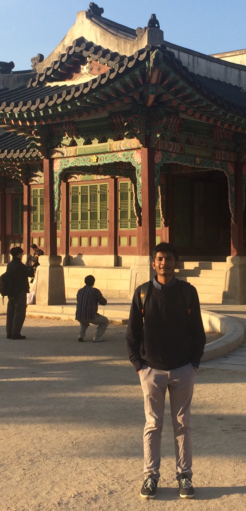
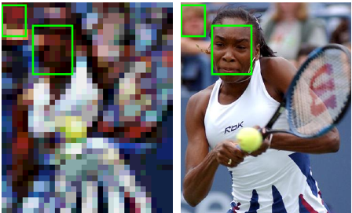
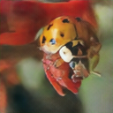
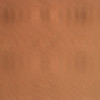

|
I am currently a third year Ph.D. candidate at the Computational Imaging Lab, IITM, where I work under Dr. Kaushik Mitra on computational imaging, deep learning and image processing. At the Computational Imaging Lab, I have worked on developing reconstruction, inference and design algorithms for lensless imaging systems. I also work in close collaboration with the Rice Computational Imaging Lab, Houston, Texas. Prior to joining the Ph.D. program at IIT Madras, I completed my undergraduate in Electronics and Instrumentation Engineering from the National Institute of Technology Rourkela, India. Email / CV / Google Scholar / Github / LinkedIn |
 |
{kind=link}
News:
- (Oct 16th, 20) An extension of our ICCV 2019 paper has been accepted for publication in IEEE TPAMI!
- (June 28th, 20) Awarded the Qualcomm Innovation Fellowship India 2020. Thanks, Qualcomm!
- (Mar 6th, 20) Paper on privacy enhancing camera accepted for orals at ICME 2020!
- (Sep 5th, 19) Awarded Google Travel Grant to attend ICCV 2019!
- (July 22nd, 19) One paper accepted for orals at ICCV 2019. Seoul we are coming!
- (May 13th, 19) I will be interning at Prof. Ashok Veeraraghavan's lab at Rice University till November 2019
- (July 9th, 18) I have joined Prof. Kaushik Mitra's lab at IIT Madras as a Ph.D. student
|
I'm interested in computational imaging, signal processing, and machine learning. Much of my recent work has been focused on using deep learning to solve inverse imaging problems. In particular, I have been working on design, inference and reconstruction algorithms for lensless cameras. |
 
|
We propose a general learning based framework to recover photorealistic scenes from lensless captures for both separable and non-separable forward models. |
|

|
We propose a learning based framework for designing the optical and analog components of a privacy enhancing camera. |
|


|
We propose a learning based solution to recover photorealistic scenes from globally multiplexed lensless measurements. |
|
|